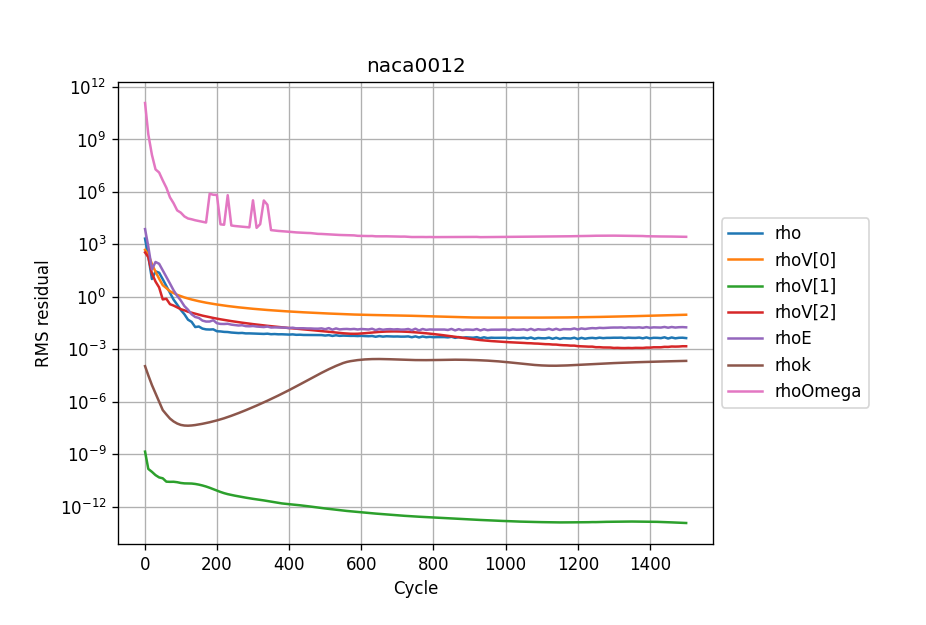
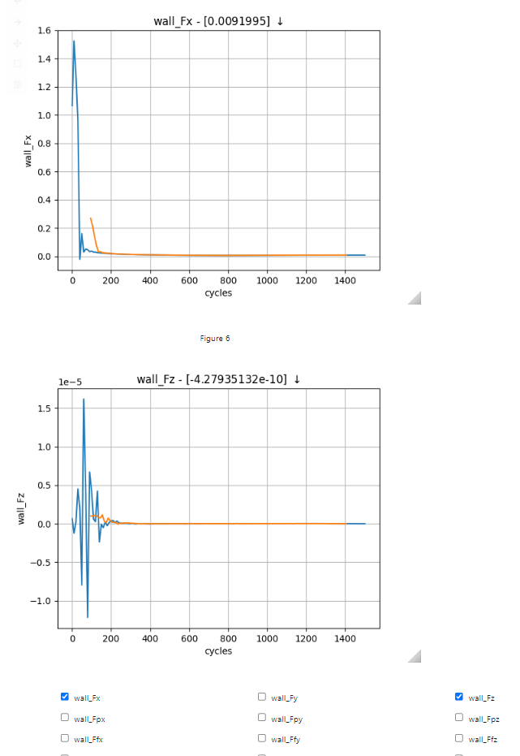
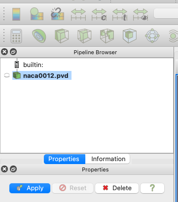
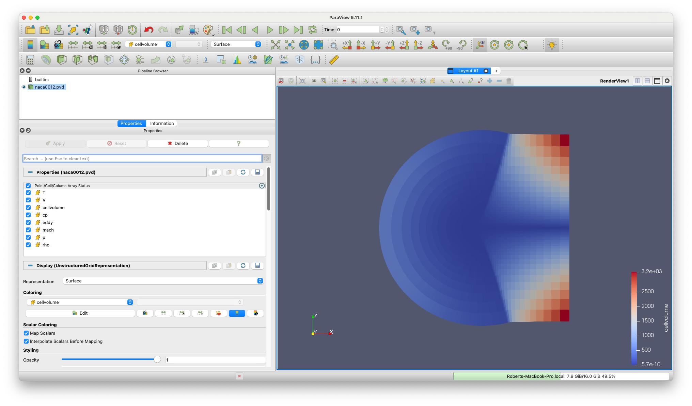

Tutorial 1: Simple Aerofoil¶
What is in this tutorial?¶
The NACA0012 is a symmetrical aerofoil which is commonly used for code validation. In this configuration it is a quick and simple simulation to run. By downloading this zip file and following the instructions below, you should learn to run, post-process and visualise a simple zCFD simulation. This is a small simulation which most users should be able to run on a laptop in ~5 minutes.
What you need?¶
To run the tutorial you will need an installation of zCFD and a valid licence (the free licence is sufficient for this tutorial). For instructions on installing zCFD please see here or if you are using an EPIC Desktop please see here
The tutorial assumes that you are running all commands using a bash shell on Linux.
Step 1. Download the files¶
The tutorial zip file can be downloaded here. The zip file contains a mesh file (naca0012.h5) and a zCFD control file (naca0012.py).
This tutorial will assume you unzip the file in a directory called “zcfd_tutorial_1” in your users home directory.
cd ~
mkdir zcfd_tutorial_1
wget https://zcfd.zenotech.com/tutorials/1/naca0012.zip
unzip naca0012.zip
Step 2. Review Control file¶
naca0012.py is the zCFD control file. When we run zCFD, zCFD reads the control file and uses the Python dictionary parameters to set the solver settings. A brief overview of the parameters dictionary for the simulation is given below; for a more detailed description of the control file structure, see the reference guide.
parameters = {
"time marching": {
"unsteady": {"total time": 1.0, "time step": 1.0},
"scheme": {"name": "implicit euler", "stage": 1},
"cfl": 50,
"cfl ramp factor": {"growth": 1.1, "initial": 1.0},
"cycles": 1500,
},
"equations": "RANS",
"RANS": {
"order": "euler_second",
"turbulence": {"model": "sst"},
"inviscid flux scheme": "Roe",
},
"IC_1": {
"temperature": 300,
"pressure": 101325.0,
"V": {"vector": [1.0,0.0,0.0], "Mach": 0.15},
"viscosity": 1.02145e-05,
"turbulence intensity": 5.2e-2,
"eddy viscosity ratio": 1.0,
},
"BC_1": {
"zone": [1],
"type": "farfield",
"condition": "IC_1",
"kind": "riemann",
},
"BC_2": {
"zone": [4],
"type": "wall",
"kind": "noslip",
},
"BC_3": {
"zone": [2, 3],
"type": "symmetry",
},
"report": {
"frequency": 10,
"forces" : {
"FR_1" : {"name" : "wall", "zone" : [4]},
}
},
"reference": "IC_1",
"write output": {
"surface variables": ["V","p","mach","cp","cf","pressureforce","frictionforce"],
"volume variables": ["V", "p", "T", "rho", "mach", "cp", "eddy"],
},
}
Time marching¶
The start of the parameters dictionary contains the time marching sub-dictionary. The unsteady sub-dictionary sets whether we are running an unsteady or a steady simulation. The fact that total time and time step are the same number means that we’re running a steady simulation. Steady simulations assume that the flow we are simulating does not vary with time. Most real flows are not truly ‘steady’, but steady simulations tend to be much easier and cheaper to run than unsteady simulations. For an attached, streamlined flow like this one using a steady simulation is reasonable when time-resolved data is not required.
CFD simulations work by iteration - we start with a very rough estimate of the flow \(f(x, 0)\), then during the first ‘iteration cycle’ the solver uses \(f(x, 0)\) to create a better approximation of the flow, \(f(x,1)\). This is repeated many times - we use \(f(x,1)\) to calculate \(f(x,2)\), \(f(x,2)\) to calculate \(f(x,3)\) and so on, until eventually we reach an estimate of the flow we are happy with.
The flow will generally change very quickly in the first few iterations, and then converge asymptotically on the ‘right’ answer. The cycles parameter states how many iterations should be used in the simulation - the higher it is the more accurate the solution is likely to be, but given the convergence is asymptotic setting it too high will lead to lots of computational effort being used for very little change in the solution towards the end.
The scheme defines the numerical scheme used by the solver to get from \(f(x,n)\) to \(f(x,n+1)\). The implicit euler scheme is a sensible choice to use for this type of simulation.
The CFL essentially sets how much the flow is allowed to change between \(f(x,n)\) and \(f(x,n+1)\) approximations of the flow field - if it is set too high the simulation will not converge, and if it is set too low the simulation will take many cycles reach the appropriate flow.
Equations¶
The equations sets the type of flow we are simulating - there are a number of different options depending on the assumptions we make about the flow. RANS is used when we are simulating a compressible flow, and want to simulate the effects of turbulence on the mean flow by use of a turbulence equation. The order sets how the flow is spatially discretised, and the turbulence sets the turbulence model used.
IC_1¶
Now that the numerical settings have been defined, the flow needs to have boundary conditions. Boundary conditions define what happens at exterior faces of the mesh. In this case, there are three boundary conditions.
The first boundary condition we consider is that of the freestream air, which is at a temperature of 300 K, a pressure of 101325 Pa and flows parallel to the mesh’s x axis at a Mach number of 0.15. The IC_1 dictionary defines a flow at these conditions.
Because the RANS equations include the effect of viscosity, we also need to define the viscosity at the IC_1 flow condition (in this case, we set it to be \(1.02145 {\times}10^{-5}\ \mathrm{kg\ m^{-1}\ s^{-1}}\) at 300 K). This corresponds to a chord based Reynolds number of 6 million. Because the RANS equations include turbulence modelling, we also need to set the turbulence intensity and eddy viscosity ratio - these are used as boundary conditions for the SST turbulence model equations. The values given are sensible values for flows without significant freestream turbulence.
BC_1¶
The BC_1 dictionary assigns the IC_1 flow condition to all mesh faces contained in the mesh zone 1. Mesh zones are defined during the meshing process, and in this case mesh zone 1 contains all the mesh faces which are on the farfield exterior surface of the mesh. The farfield type means that flow can pass freely through the specified mesh faces, and the riemann kind means that flow can pass both in and out of the mesh via the specified mesh faces.
The IC_1 dictionary is, by default, also used to define the initial guess for the flow - at 0 cycles we assume that the entirety of the flow is flowing at the IC_1 conditions.
BC_2¶
The BC_2 dictionary assigns a no-slip wall boundary condition to all mesh faces contained in the mesh zone 4. Mesh zone 4, in this case, contains all faces on the aerofoil surface.
BC_3¶
The BC_3 dictionary assigns a symmetry boundary condition to all mesh faces contained in mesh zones 2 and 3, which are the +ve z and -ve z faces of the mesh. This boundary condition type is used here so that we can simulate an aerofoil of effectively infinite span, but with a low mesh resolution in the z axis to reduce simulation cost.
Report¶
The report dictionary defines which flow statistics zCFD should output to the user during the simulation, and how often. The ‘frequency’ key here defines that zCFD should report flow statistics to the user every 10 iteration cycles during the simulation. Exactly which flow statistics are outputted can be changed by the user, but the defaults should be enough for us to successfully monitor the convergence of the solution. The ‘forces’ sub-dictionary allows us to monitor the forces on specific mesh zones- here we are outputting the forces on mesh zone 1, which is the aerofoil surface. Some of the flow statistics (e.g. force on the aerofoil wall) are non-dimensionalised (see here) and the reference parameter defines the flow state they should be non-dimensionalised against. This is normally chosen to be the freestream state.
Write Output¶
The final section of parameters, write output, defines which variables should be outputted into VTK format for visualisation by the user at the end of the simulation.
Step 3. Running zCFD¶
To run zCFD you first need to source the “activate” script and then use the “run_zcfd” path.
Activating your environment:
source ./<ZCFD_INSTALL_PATH>/bin/activate
or if using an EPIC Desktop:
module load zcfd/latest
source activate
Run zCFD validate input to check the control dictionary for errors:
cd ~/zcfd_tutorial_1/
validate_input naca0012.py -m naca0012.h5
Run zCFD in the case directory:
run_zcfd -m naca0012.h5 -c naca0012.py
zCFD will attempt to detect the number of CPU cores and any GPUs present and make use of them. If you want to manually configure this see here.
As the solver is running it will output information about the current CFL, Multigrid level, timing, reporting information and file I/O. The output from zCFD will be written to the screen and also to a log file “naca0012.log”.

zCFD will run for the 1500 cycles specified in the control dictionary, if you want to stop the solver early then you can either press CTRL+C to kill the process or update the cycles keyword to be a value smaller than the current cycle number, zCFD will detect this change and stop the solver.
The solver should take a few minutes to complete on a modern GPU, and a bit longer on a CPU.
Step 4. Review the output¶
A successful zCFD run will result in the following files and directories being created. In this case, since our control file is called naca0012.py the output files will also be created with that name. The _OUTPUT folder also includes an indication of the number of parallel partitions used, this tutorial assumes a single partition and so the output will be “naca0012_P1_OUTPUT” if we ran on two partitions it would be “naca0012_P2_OUTPUT”
File/Directory |
Description |
|---|---|
naca0012.log |
This is simply a copy of the output to screen (see above) which happened during the run. |
naca0012_report.csv |
A .csv format table which shows the variation of flow statistics with cycle number |
naca0012_report.ipynb |
An auto-generated Jupyter notebook which can be used to read the naca0012_report.csv file and easily plot the flow statistics varying with cycle number. |
naca0012_results.h5 |
The flow solution calculated by zCFD, in zCFD format. This can be used for visualisation, but it is generally only used for restarting zCFD simulations from |
naca0012_status.txt |
A .json format file outputted by zCFD. Among other things, it records when the simulation was last run, which mesh was used and which control file was used. |
naca0012_P1_OUTPUT/ |
A directory which contains flow solution calculated by zCFD, in VTK format. This is generally more suitable for visualising the data with than the zCFD proprietary format. |
naca0012_P1_OUTPUT/naca0012.pvd |
A VTK file which, when opened, will load all the volume data from the simulation. |
naca0012_P1_OUTPUT/naca0012_farfield.pvd, naca0012_wall.pvd etc |
A series of VTK files (one for each boundary condition type) which, when opened, will load the surface data for that boundary condition. |
naca0012_P1_OUTPUT/VISUALISATION/ |
Contains the raw data files which are loaded when the naca0012.pvd and naca0012_farfield.pvd, naca0012_wall.pvd etc. files are opened. |
naca0012_P1_OUTPUT/LOGGING/ |
Contains a separate copy of the naca0012.log file for each MPI partition. Used for debugging. |
Step 5. Looking at residuals with notebook¶
The naca0012_report.ipynb file can be loaded using a variety of methods, but here we will load it using a browser. The commands below should open Jupyter Notebook within a browser window. If the browser does not open automatically then the notebook URL should be visible in the command output.
Activate your environment:
. ./<ZCFD_INSTALL_PATH>/bin/activate
or if using an EPIC Desktop:
module load zcfd/latest
. activate
Start the Jupyter Notebook:
cd ~/zcfd_tutorial_1/
start_lab
Load the naca0012_report.ipynb in Jupyter, then click run all.
Plotting residuals¶
The naca0012_report.ipynb makes use of the zutil.plot.Report class to read and plot the zCFD report data. Calling the plot(‘naca0012_report.csv’) method reads the naca0012_report.csv file and prints a graph of solution variable residuals against cycle number .
from zutil.plot import *
r = Report()
r.plot('naca0012_report.csv')
The residual variables essentially measure how close to a stable solution of the chosen flow equations (e.g. the RANS equations) the simulation is. There is a residual for each flow variable, and the lower the residual, the more converged the flow solution is.
As would be expected (note the logarithmic y axis), the residuals drop very quickly in the first couple of hundred iterations as the flow quickly develops from the initial condition (which in this case, is the freestream condition everywhere). After that, the flow residuals (rho, rhoV[0], rhoV[1], rhoV[2] and rhoE) residuals continue to drop, while the turbulence residuals (rhok and rhoOmega) drop initially before flatlining / increasing.
This behaviour is common - the turbulence equations can take a while to react to changes in the flow field, and the initial guess for the turbulence equations is often poorer than the initial conditions for the flow field. A combination of the fact that the flow residuals have dropped several orders of magnitude over the simulation history and the fact that the residuals are in effect flat from 20,000 cycles onwards mean we can be confident that the simulation is sufficiently converged.
Plotting forces¶
Next, we can use the Jupyter notebook to plot the variation of the force coefficients on the aerofoil surface with cycle number.
r.plot_forces()
Check the wall_Fx and wall_Fz tickboxes - given this is a symmetrical aerofoil run at 0 angle of attack, the x force corresponds to drag and the z force corresponds to lift. We would expect zero lift and a non-zero, positive drag.
The force plots tell a similar story to the residuals - there are initially large oscillations as the flow settles down, before the force traces essentially flatline from 1200 cycles onwards.
Plotting performance¶
r.plot_performance('naca0012.log')
Finally, we can plot the time used per cycle using the plot_performance(naca0012.log) method. The last cycle is particularly long because it is the only cycle where the flow solution is written to a file.
Step 6. Looking at results with Paraview¶
Paraview is a generally purpose visualisation tool that is the recommended way of post processing zCFD results. Please see ParaView.org for download and installation instructions.
Or if using an EPIC Desktop then Paraview is available as a module:
module load paraview
paraview
Loading your data¶
As mentioned above a “naca0012_P1_OUTPUT” folder has been generated, and contains a “.pvd” file (naca0012.pvd). This file can be seen as an of index of all the different output files, this way, your output data is imported onto Paraview using a single file, making it easier to handle.
After opening Paraview, simply click on the “Open” icon shown below or go into File>Open or press Ctrl+O. Locate the directory in which you have stored your data and open naca0012.pvd.
Once the file is correctly loaded in Paraview, the “Pipeline Browser” on the left of your screen should look like this:
Now you need to click “Apply”, which will lead to the following layout:
You may need to use the ‘set view direction to +ve y’ button:
Visualising Variables¶
By default, Paraview shows the “cellvolume” variable. This allows to see that the mesh is refined near the center of the mesh, where the airfoil is. This is common practice, as capturing the flow around a body is more demanding than doing so in the free-stream. Naturally, having a really fine mesh over the entire fluid domain would make the problem really computationally expensive.
Other variables can be selected and shown using the following scrolling menu:
Let’s observe the pressure coefficient around the airfoil. To do so, use the scrolling menu and select the “cp” variable.
Note
The pressure coefficient is given by the following formula \(C_p = \frac{p-p_{\infty }}{\frac{1}{2}\rho _{\infty }V_{\infty }^2}\)
This gives the following (you will need to zoom in substantially to the centre of the mesh before you can clearly see the airfoil):
Note that you can change the colormap used by Paraview by clicking on the “Edit Color Map” icon:
and then the “Choose Preset” icon:
Here are the same results shown using different colormaps:
Those simple steps allow to qualitatively inspect the solution given by our CFD simulation. More advanced analysis is also feasible. A common result in aerodynamics, especially around an airfoil, is the plot of the pressure coefficient along the chord.
Pressure Coefficient Plot¶
Open the “naca0012_wall.pvd” file . Naturally, the resulting image looks different from the previous as this only contains the zones where a “wall” boundary condition has been defined, which in this case happens to just be the airfoil itself.
It is usually of interest to have a plot showing the pressure coefficient on the upper and the lower surface, therefore it is necessary to extract the data separately for each face of the airfoil. The upper and lower surfaces of the airfoil then need to be separated.
To this end, the “Clip” filter has to be used. To use it, right-click on the “naca0012_wall.pvd” object in the Pipeline Browser, select Add Filter -> Alphabetical -> Clip. The properties of the “Clip” filter are displayed on the left. Firstly, untick the “Invert” option and then you should set them to the following combination:

By default, this will “remove” the lower surface of the airfoil, leaving the following shape:
Note
To remove the upper surface instead, just tick the “Invert” option in the “Clip” filter’s properties.
Now, we want to take a “Slice” of the remaining surface. To do so, follow the same procedure as for the “Clip” filter but select the “Slice” filter instead. When prompted, set the properties of the filter to be as follows:
You should end up with this:
Then the data should be converted from “cell data” to “point data”. This is done by using the “CellDatatoPointData” filter. Access by right-clicking on the “Slice” object selecting “Add filters”.
Once this is done, a plot can be produced in Paraview using the “PlotOnSortedLines” filter. Right-click on the “CellDatatoPointData1” object created previously and add the “PlotOnSortedLines” filter. A plot should appear on the right. You can select the variables to plot in the “Properties -> Series Parameters” window, as well as changing the settings of the axis. Select the “cp” variable in “Series Parameters’, and use ‘Points_X’ as the ‘X Array Name’. Untick ‘Show Legend’, set ‘Left Axis Title’ to ‘$C_p$’ and set the ‘Bottom Axis Title’ to ‘x’. You can also use the “Left Axis Use Custom Range” option to change the y-axis range:
Note that setting the maximum as a negative number will “invert” the y-axis and the negative numbers will be shown “at the top”.

The data can be exported as a .csv file, which can then be manipulated in Python, Excel, MATLAB or any other software. To do so, go to File -> Save data -> select a folder and give a name to the file. The following window should appear:
By default, Paraview writes all the variables into the .csv file. However, if only a few of them are of interest, you can use the “Choose Arrays To Write” option.
Now, this procedure can be repeated for the lower surface of the airfoil. A pressure coefficient plot can then be made for validation purposes.

{kind=link}
{kind=link}
{kind=link}
{kind=link}
{kind=link}
{kind=link}
{kind=link}
{kind=link}
{kind=link}
{kind=link}
{kind=link}
{kind=link}
{kind=link}
{kind=link}
{kind=link}
{kind=link}
{kind=link}
{kind=link}